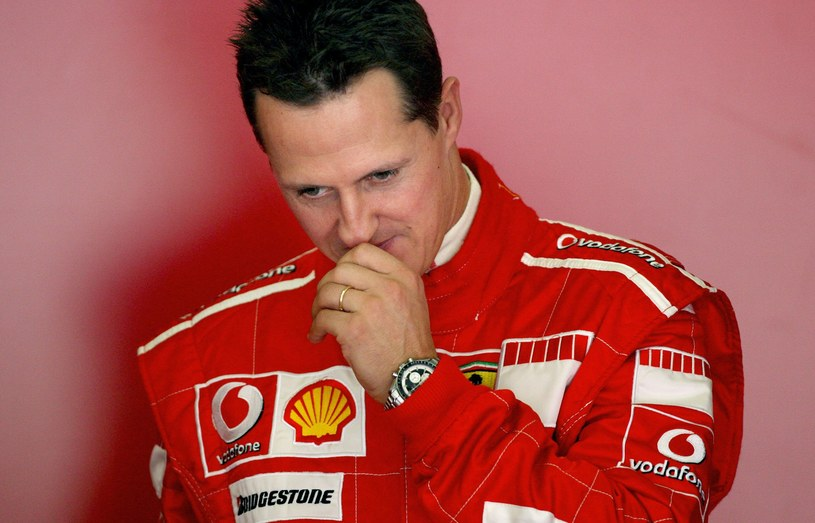

|
Name
F1 best drivers |
Age
How old the drivers are |
Championship
How many wins they have |
|---|---|---|
| Lewis Hamilton | 37 years | 7 Wins |
| Michael Schumacher | 53 years | 7 Wins |
| Juan Manuel Fangio | Died at 84 years | 5 Wins |